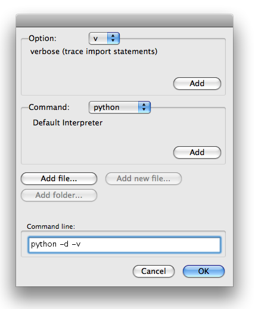

EasyDialogs – Mac OS X 向けの Carbon ダイアログ¶
| 目的: | Python から Carbon ダイアログのシンプルなインタフェースを提供する |
|---|---|
| 利用できる バージョン: | 2.0 以上、マッキントッシュのみ(Windows の実装は以下のリファレンスを参照) |
EasyDialogs モジュールは、ファイルやディレクトリ名をユーザーに尋ねる普通のダイアログと同様に、シンプルなメッセージとプロンプトダイアログで動作するクラスや関数を提供します。このダイアログは Carbon API を使用します。この記事で説明しないオプションの詳細は Apple の Navigation Services Reference を参照してください。
メッセージ¶
シンプルな Message() 関数はユーザへのメッセージを含むモーダルダイアログを表示します。
import EasyDialogs
EasyDialogs.Message('This is a Message dialog')

ok 引数で “OK” ボタンのラベルを簡単に変更できます。
import EasyDialogs
EasyDialogs.Message('The button label has changed', ok='Continue')

プログレスバー¶
ProgressBar クラスは、進捗メータをもつモードレスダイアログを管理します。それは確定モード(どのぐらいの処理を終了したかが分かるとき)か、不定モード(アプリケーションが動作していることは表示したいが、どのぐらいの処理が行われるか分からないとき)で操作できます。そのコンストラクタは、タイトル、最大値、操作のカレントフェーズで表示するラベルの引数を取ります。
確定モードでは、処理の段階の数、ダウンロードするデータサイズ等を maxval 引数にセットします。次に 0 から maxval へ進捗を増加させる incr() メソッドを使用してください。
import EasyDialogs
import time
meter = EasyDialogs.ProgressBar('Making progress...',
maxval=10,
label='Starting',
)
for i in xrange(1, 11):
phase = 'Phase %d' % i
print phase
meter.label(phase)
meter.inc()
time.sleep(1)
print 'Done with loop'
time.sleep(1)
del meter
print 'The dialog should be gone now'
time.sleep(1)

$ python EasyDialogs_ProgressBar.py
Phase 1
Phase 2
Phase 3
Phase 4
Phase 5
Phase 6
Phase 7
Phase 8
Phase 9
Phase 10
Done with loop

The dialog should be gone now
del を使用して ProgressBar インスタンスを明示的に削除すると画面からも削除されます。
一様ではない進捗状況を測定している場合、進捗メータを incr() ではなく set() に変更してください。
import EasyDialogs
import time
meter = EasyDialogs.ProgressBar('Making progress...',
maxval=1000,
label='Starting',
)
for i in xrange(1, 1001, 123):
msg = 'Bytes: %d' % i
meter.label(msg)
meter.set(i)
time.sleep(1)

シンプルプロンプト¶
さらに EasyDialogs はユーザに情報を問い合わせることもできます。ユーザにシンプルな文字列を入力させるモーダルダイアログを表示するには AskString を使用してください。
import EasyDialogs
response = EasyDialogs.AskString('What is your favorite color?', default='blue')
print 'RESPONSE:', response
返り値はユーザの入力次第です。ユーザが入力したテキストか、
$ python EasyDialogs_AskString.py
RESPONSE: blue
Cancel ボタンを押した場合は None が返されます。
$ python EasyDialogs_AskString.py
RESPONSE: None
文字列は254文字の長さ制限があります。それ以上長い文字列が入力された場合は切り捨てられます。
import EasyDialogs
import string
default = string.ascii_letters * 10
print 'len(default)=', len(default)
response = EasyDialogs.AskString('Enter a long string', default=default)
print 'len(response)=', len(response)

$ python EasyDialogs_AskString_too_long.py
len(default)= 520
len(response)= 254
パスワード¶
画面にテキストを表示しない秘密の値をユーザへ入力させるには AskPassword を使用してください。
import EasyDialogs
response = EasyDialogs.AskPassword('Password:', default='s3cr3t')
print 'Shh!:', response
$ python EasyDialogs_AskPassword.py
Shh!: s3cr3t
AskPassword の Ok / Cancel の動作は AskString と同じです。
ファイルとディレクトリ¶
ファイルまたはディレクトリ名を尋ねるための特別な関数があります。これらはネイティブのファイルセレクタダイアログを使用するので、ユーザはファイルのパスを入力する必要はありません。例えば、ユーザに開くファイルを尋ねるには AskFileForOpen を使用してください。
import EasyDialogs
import os
filename = EasyDialogs.AskFileForOpen(
message='Select a Python source file',
defaultLocation=os.getcwd(),
wanted=unicode,
)
print 'Selected:', filename
wanted=unicode の引数は、ユニコード文字列としてファイル名を返すように AskFileForOpen へ伝えます。その他の利用できる返り値の型は、ASCII 文字列とファイルリファレンスを扱う Apple のデータ構造です。
DefaultLocation を指定することで、このサンプルはカレントのワークディレクトリでダイアログを初期化します。それでもユーザーはファイルシステムを移動して任意の操作ができます。
AskFileForOpen に対するその他のオプションは、表示されるファイルをフィルタしたり、ユーザへ見せるファイルの種別コードを制御したり、コールバック関数でダイアログとやり取りできます。詳細は標準ライブラリドキュメントと Apple のリファレンスガイドを参照してください。

$ python EasyDialogs_AskFileForOpen.py
Selected: /Users/dhellmann/Documents/PyMOTW/in_progress/EasyDialogs/EasyDialogs_AskFileForOpen.py
ファイルを保存したときにユーザへ新たなファイル名を表示するには AskFileForSave を使用してください。
import EasyDialogs
import os
filename = EasyDialogs.AskFileForSave(
message='Name the destination',
defaultLocation=os.getcwd(),
wanted=unicode,
)
print 'Selected:', filename

$ python EasyDialogs_AskFileForSave.py
Selected: /Users/dhellmann/Documents/PyMOTW/in_progress/EasyDialogs/new_file.py
ユーザにディレクトリを選択させる必要がある場合は AskFolder を使用してください。このダイアログは新しいフォルダを作成できるボタンもあります。
import EasyDialogs
import os
filename = EasyDialogs.AskFolder(
message='Name the destination',
defaultLocation=os.getcwd(),
wanted=unicode,
)
print 'Selected:', filename
$ python EasyDialogs_AskFolder.py
Selected: /Users/dhellmann/Documents/PyMOTW/in_progress/EasyDialogs
GetArgv¶
かなり複雑なダイアログ GetArgv は、メニューからオプションを選択することでユーザにコマンドライン文字列を作成させます。これは getopt 構文で有効なオプションを記述するために、 getopt で解析できる文字列のリストを返します。今週の私の調査では、ユーザがコマンドラインで引数を指定しないときに GetArgv を使用するスクリプトをいくつか見つけました。
Python インタープリタでサポートされているオプションを使用してコマンドを作成するサンプルをみてみましょう。
import EasyDialogs
arguments = EasyDialogs.GetArgv([
('c=', 'program passed in as string (terminates option list)'),
('d', 'Debug'),
('E', 'Ignore environment variables'),
('i', 'Inspect interactively after running'),
('m=', 'run library module as a script (terminates option list)'),
('O', 'Optimize generated bytecode'),
('Q=', 'division options: -Qold (default), -Qwarn, -Qwarnall, -Qnew'),
('S', "don't imply 'import site' on initialization"),
('t', 'issue warnings about inconsistent tab usage'),
('tt', 'issue errors about inconsistent tab usage'),
('u', 'unbuffered binary stdout and stderr'),
('v', 'verbose (trace import statements)'),
('V', 'print the Python version number and exit'),
('W=', 'warning control (arg is action:message:category:module:lineno)'),
('x', 'skip first line of source, allowing use of non-Unix forms of #!cmd'),
],
commandlist=[('python', 'Default Interpreter'),
('python2.5', 'Python 2.5'),
('pyhton2.4', 'Python 2.4'),
],
addoldfile=True,
addnewfile=False,
addfolder=False,
)
print arguments

最初の引数はオプションの識別子とテキストの説明を含むタプルのリストです。その識別子はシンプルなブーリアンスイッチを一文字で表せます。引数を取る一文字オプションにコロン(“:”)か、等号(“=”)が続きます。複数文字は長いスイッチです(“opt” は “–opt” に変換されます)。引数を取る長いオプション名はコロンか、等号に続く複数の文字列です。オプションの説明はダイアログで表示される文字列です。

このダイアログは4つのセクションに分かれています。上部は指定したオプションのリストです。ユーザーはリストからオプションを選択できます。オプションが引数を取る場合、テキストフィールドが表示されるのでユーザーが値を入力できます。 Add ボタンは、選択されたオプションをダイアログ下部のコマンドラインフィールドに追加します。
GetArgv への2番目の引数は、コマンドとその説明のリストです。ユーザーは、ダイアログの中央のメニューから引数リストに含められるコマンドを選択できます。

addoldfile, addnewfile, addfolder の3つの引数は、ボタンのダイアログの3番目のセクションにあるボタンの内容を設定します。このサンプルでは Add file... ボタンのみが有効です。それは Python インタープリタがディレクトリや存在しないファイルを引数として受け取らないからです。
ダイアログの下部は、ユーザが作成したコマンドラインです。ユーザが OK を押すと、 GetArgv は sys.argv と同様に全てのオプションのリストを返します。
$ python EasyDialogs_GetArgv.py
['python', '-d', '-v', '/Users/dhellmann/Documents/PyMOTW/in_progress/EasyDialogs/EasyDialogs_GetArgv.py']
See also
- EasyDialogs
- 本モジュールの標準ライブラリドキュメント
- Navigation Services Reference
- Mac OS X でファイルオブジェクトを扱う Apple の API ドキュメント
- EasyDialogs for Windows
- 本モジュールの Windows バージョン
- optparse-gui
- GetArgv に optparse を使うように置き換えたもの
- EasyGui
- シンプルでグラフィカルなユーザインタフェースを作成する同様のライブラリの移植版